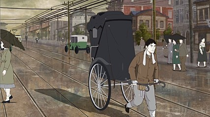

대한민국의 슬픈 문학 작품
- 현진건의 운수 좋은 날
- 현진건 작품 해석
- 수사의 일생
홈페이지 제작:
- 김수지
- 피카추
- 꼬부기
- 피존트
- 또가스
현진건의 운수 좋은 날 (너무 슬픔 주의..ㅜㅜ)

(전략)
."에이, 오라질 년, 조랑복은 할 수가 없어. 못 먹어 병, 먹어서병, 어쩌란 말이야! 왜 눈을 바루 뜨지 못해!"
하고, 김 첨지는 앓는 이의 뺨을 한 번 후려갈겼다. 홉뜬 눈은 조금 바루어졌건만 이슬이 맺히었다. 김 첨지의 눈시울도 뜨근뜨근한 듯하였다.
이 환자가 그러고도 먹는 데는 물리지 않았다. 사흘 전부터 설렁탕 국물이 마시고 싶다고 남편을 졸랐다.
"이런 오라질 년! 조밥도 못 먹는 년이 설렁탕은, 또 처먹고 지랄을 하게."
라고 야단을 쳐 보았건만, 못 사 주는 마음이 시원치는 않았다.
인제 설렁탕을 사 줄 수도 있다. 앓는 어미 곁에서 배고파 보채는 개똥이(세 살먹이)에게 죽을 사 줄 수도 있다.
――팔십 전을 손에 쥔 김 첨지의 마음은 푼푼하였다.
그러나 그의 행운은 그걸로 그치지 않았다.
땀과 빗물이 섞여 흐르는 목덜미를 기름주머니 다 된 왜목수건으로 닦으며, 그 학교 문을 돌아 나올 때였다. 뒤에서 '인력거!' 하고 부르는 소리가 난다. 자기를 불러 멈춘 사람이 그 학교 학생인 줄 김 첨지는 한 번 보고 짐작할 수 있었다. 그 학생은 다짜고짜로,
"남대문 정거장까지 얼마요?"
라고 물었다. 아마도 그 학교 기숙사에 있는 이로, 동기(冬期) 방학을 이용하여 귀향하려 함이리라. 오늘 가기로 작정은 하였건만, 비는 오고 짐은 있고 해서 어찌할 줄 모르다가, 마침 김 첨지를 보고 뛰어나왔으리라.
그렇지 않으면, 왜 구두를 채 신지도 못해서 질질 끌고, 비록 고쿠라 양복일망정 노박이로 비를 맞으며 김 첨지를 뒤쫓아 나왔으랴.
"남대문 정거장까지 말씀입니까?"
하고, 김 첨지는 잠깐 주저하였다. 그는 이 우중(雨中)에 우장도 없이 그 먼 곳을 철벅거리고 가기가 싫었음일까? 처음 것, 둘째 것으로 고만 만족하였음일까? 아니다, 결코 아니다. 이상하게도 꼬리를 맞물고 덤비는 이 행운 앞에 조금 겁이 났음이다. 그러고 집을 나올 제 아내의 부탁이 마음에 켕기었다.
――앞집 마나님한테서 부르러 왔을 제, 병인(病人)은 그 뼈만 남은 얼굴에 유일의 생물 같은 유달리 크고 움푹한 눈에 애걸하는 빛을 띠며,
"오늘은 나가지 말아요. 제발 덕분에 집에 붙어 있어요. 내가 이렇게 아픈데……"
라고 모기 소리같이 중얼거리고 숨을 그르렁그르렁하였다.
그 때에 김 첨지는 대수롭지 않은 듯이,
"아따, 젠장맞을 년, 별 빌어먹을 소리를 다 하네. 맞붙들고 앉았으면 누가 먹여 살릴 줄 알아?"
하고 훌쩍 뛰어나오려니까, 환자는 붙잡을 듯이 팔을 내저으며,
"나가지 말라도 그래. 그러면 일찍이 들어와요."
하고 목메인 소리가 뒤를 따랐다.
정거장까지 가잔 말을 들은 순간에, 경련적으로 떠는 손, 유달리 큼직한 눈, 울 듯한 아내의 얼굴이 김 첨지의 눈앞에 어른어른하였다.
"그래 남대문 정거장까지 얼마란 말이오?"
하고 학생은 초조한 듯이 인력거꾼의 얼굴을 바라보며 혼잣말같이,
"인천(仁川) 차가 열한 점에 있고, 그 다음에는 새로 두 점이던가?"
라고 중얼거린다.
"일 원 오십 전만 줍지요."
이 말이 저도 모를 사이에 불쑥 김 첨지의 입에서 떨어졌다. 제 입으로 부르고도 스스로 그 엄청난 돈 액수에 놀래었다. 한꺼번에 이런 금액을 불러라도 본 지가 그 얼마만인가! 그러자, 그 돈 벌 용기가 병자에 대한 염려를 사르고 말았다. 설마 오늘 내로 어떠랴 싶었다. 무슨 일이 있더라도, 제 일, 제 이의 행운을 곱친 것보담도 오히려 갑절이 많은 이 행운을 놓칠 수 없다 하였다.
"일 원 오십 전은 너무 과한데."
이런 말을 하며 학생은 고개를 기웃하였다.
"아니올시다. 이수(里數)로 치면 여기서 거기가 시오 리나 넘는답니다. 또, 이런 진 날은 좀 더 주셔야지요."
하고 빙글빙글 웃는 차부의 얼굴에는 숨길 수 없는 기쁨이 넘쳐 흘렀다.
"그러면, 달라는 대로 줄 터이니 빨리 가요."
(중략 / 일과 후 절친과 술을 마시다 자신의 아내가 죽었다는 농담을 함. 친구가 타박하자..)
"죽기는 왜 죽어. 생때같이 살아만 있단다. 그 오라질 년이 밥을 죽이지. 인제 나한테 속았다. 인제 나한테 속았다."
하고, 어린애 모양으로 손뼉을 치며 웃는다.
"이 사람이 정말 미쳤단 말인가. 나도 아주먼네가 앓는단 말은 들었는데."
하고, 치삼이도 어느 불안을 느끼는 듯이 김 첨지에게 또 돌아가라고 권하였다.
"안 죽었어. 안 죽었대도 그래."
김 첨지는 홧증을 내며 확신 있게 소리를 질렀으되, 그 소리엔 안 죽은 것을 믿으려고 애쓰는 가락이 있었다. 기어이 일 원어치를 채워서 곱배기 한 잔씩 더 먹고 나왔다. 궂은비는 의연히 추적추적 내린다.
김 첨지는 취중에도 설렁탕을 사 가지고 집에 다다랐다. 집이라 해도 물론 셋집이요, 또 집 전체를 세든 게 아니라 안과 뚝 떨어진 행랑방 한 칸을 빌어 든 것인데, 물을 길어 대고 한달에 일 원씩 내는 터이다.
만일 김 첨지가 주기를 띠지 않았던들, 한 발을 대문 안에 들여놓았을 때, 그 곳을 지배하는 무시무시한 정적(靜寂)―폭풍우가 지나간 뒤의 바다 같은 정적에 다리가 떨리었으리라.
쿨룩거리는 기침 소리도 들을 수 없다. 그르렁거리는 숨소리조차 들을 수 없다. 다만, 이 무덤 같은 침묵을 깨뜨리는―깨뜨린다느니 보다 한층 더 침묵을 깊게 하고 불길하게 하는, '빡빡' 소리는 빨 따름이요, '꿀떡꿀떡' 하고 젖 넘어가는 소리가 없으니, 빈 젖을 빤다는 것도 짐작할는지 모르리라.
혹은, 김 첨지도 이 불길한 침묵을 짐작했는지도 모른다. 그렇지 않으며, 대문에 들어서자마자 전에 없이 '이 난장맞을 년, 남편이 들어오는데 나와 보지도 안 해, 이 오라질 년.' 이라고 고함을 친 게 수상하다. 이 고함이야말로 제 몸을 엄습해 오는 무시무시함을 쫓아 버리려는 허장 성세(虛張聲勢)인 까닭이다.
하여간, 김 첨지는 방문을 왈칵 열었다. 구역을 나게 하는 추기( 氣)―떨어진 삿자리 밑에서 올라온 먼지내, 빨지 않은 기저귀에서 나는 똥내와 오줌내, 가지 각색 때가 켜켜이 앉은 옷내, 병인의 땀 썩은 내가 섞인 추기가 무딘 김 첨지의 코를 찔렀다.
방 안에 들어서며 설렁탕을 한 구석에 놓을 사이도 없이, 주정꾼은 목청을 있는 대로 다 내어 호통을 쳤다.
"이런 오라질 년, 주야 장천(晝夜長川) 누워만 있으면 제일이야? 남편이 와도 일어나지를 못해?"
라는 소리와 함께 발길로 누운 이의 다리를 몹시 찼다. 그러나 발길에 채이는 건 사람의 살이 아니고 나무 등걸과 같은 느낌이 있었다. 이 때에, '빡빡' 소리가 '응아'소리로 변하였다. 개똥이가 물었던 젖을 빼어 놓고 운다. 운대도 온 얼굴을 찡그려 붙여서 운다는 표정을 할 뿐이라, '응아' 소리도 입에서 나는 게 아니고 마치 뱃속에서 나는 듯하였다. 울다가 울다가 목도 잠겼고, 또 울 기운조차 시진( 盡)한 것 같다.
발로 차도 그 보람이 없는 걸 보자, 남편은 아내의 머리맡으로 달려들어, 그야말로 까치집 같은 환자의 머리를 들어 흔들며,
"이년아, 말을 해, 말을! 입이 붙었어, 이 오라질 년!"
"……."
"으응, 이것 봐, 아무 말이 없네."
"……."
"이년아, 죽었단 말이냐. 왜 말이 없어?
"……."
"으응, 또 대답이 없네. 정말 죽었나 버이."
이러다가, 누운 이의 흰 창이 검은 창을 덮은, 위로 치뜬 눈을 알아보자마자,
"이 눈깔! 이 눈깔! 왜 나를 바루 보지 못하고 천정만 보느냐, 응?"
하는 말끝엔 목이 메었다. 그러자, 산 사람의 눈에서 떨어진 닭의 똥 같은 눈물이 죽은 이의 뻣뻣한 얼굴을 어롱어롱 적신다. 문득 김 첨지는 미친 듯이 제 얼굴을 죽은 이의 얼굴에 한데 비비대며 중얼거렸다.
"설렁탕을 사다 놓았는데 왜 먹지를 못하니, 왜 먹지를 못하니…….? 괴상하게도 오늘은 운수가 좋더니만……."